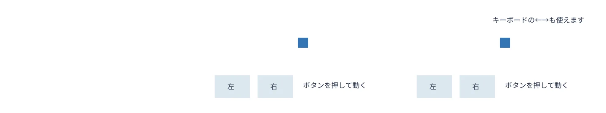
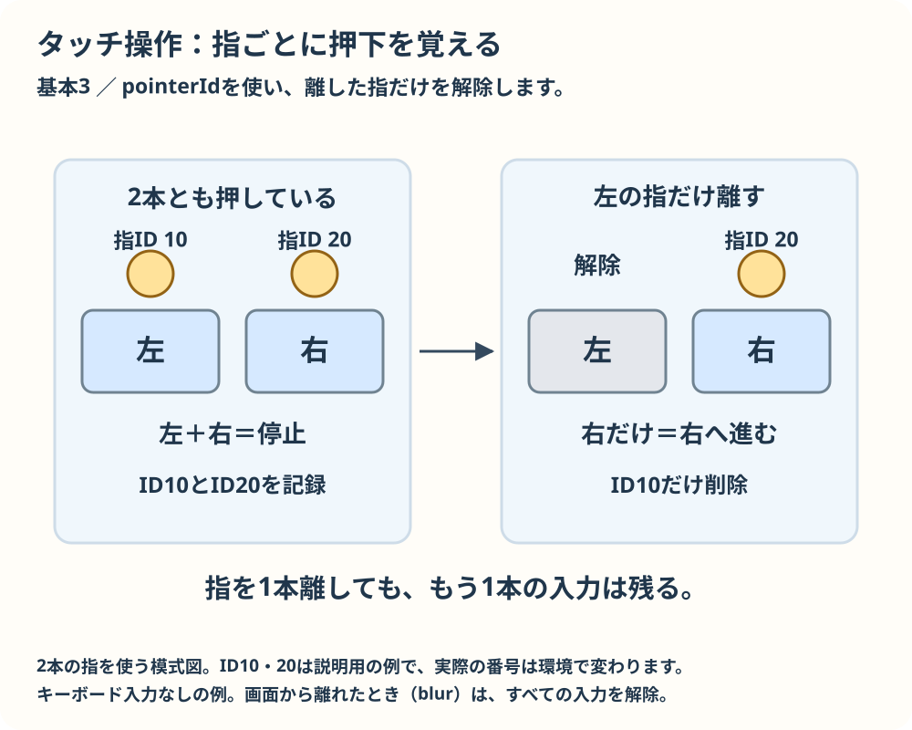

タッチ操作を作る
始める前に
ZIPを展開してできたフォルダーでindex.htmlを開きます。ZIPにはひな型の3ファイルが入っています。
WindowsでZIPを展開する（動画）
変更前を探し、変更後に置き換えて保存し、index.html を開き直します。
ステップ 1：画面内のボタンで動かす
このステップの見本を図で見る
400 + 0 - 3 = 397
1回の更新でx=397。
400 + 3 - 0 = 403
1回の更新でx=403。
ゲーム画面とコードの前後を見る

このステップの見本
この行を足す前 変わったコードの一例（script.js）
const px = (event.clientX - rect.left) * canvas.width / rect.width;
見本で確かめること
左右のボタンを押して動かします。
目標
画面内のボタンで動かす。
小さな作業
上から順に作業します。目印を探し、その下のコードを書きます。
タッチと位置を覚える
作業用の script.js の先頭近くで、次の目印のすぐ下に追加します。
目印
const ctx = canvas.getContext("2d");追加するコード
canvas.style.touchAction = "none";
let x, touch;touchAction = "none" は Canvas 上のタッチによるブラウザー操作を抑えます。let で人の横位置と押された方向を覚えます。
押した方向を調べる関数を作る
変数の宣言の下で、次の目印のすぐ下に追加します。
目印
let x, touch;追加するコード
function direction(event) {
const rect = canvas.getBoundingClientRect();
const px = (event.clientX - rect.left) * canvas.width / rect.width;
const py = (event.clientY - rect.top) * canvas.height / rect.height;
return "";
}表示上の左上からの距離を Canvas の幅・高さと表示上の幅・高さの比で換算します。例えば幅 800 を 400 で表示するとき、左から 100 は画面内 x = 200 です。続けてボタンの範囲を調べます。
ボタンの縦範囲を調べる
direction() の縦座標を求める行の下で、次の目印のすぐ下に追加します。
目印
const py = (event.clientY - rect.top) * canvas.height / rect.height;追加するコード
if (py < 300 || py >= 390) return "";< は未満、>= は以上、|| はどちらか一方です。縦 300 以上 390 未満の外側なら空文字を返します。
左右ボタンの横範囲を調べる
縦範囲を調べる行の下で、次の目印のすぐ下に追加します。
目印
if (py < 300 || py >= 390) return "";追加するコード
if (px >= 50 && px < 190) return "left";
if (px >= 220 && px < 360) return "right";&& は両方の条件です。横 50 以上 190 未満なら左、220 以上 360 未満なら右を返します。それ以外は空文字です。
位置と入力を初期化する
start() の中で、次の目印のすぐ下に追加します。
目印
function start() {追加するコード
x = 400; touch = "";= は右の値を左に入れる代入です。画面中央に置き、タッチの方向を空にします。
タッチから左右の状態を求める
update() の中で、次の目印のすぐ下に追加します。
目印
function update() {追加するコード
const left = touch === "left", right = touch === "right";=== は同じかを調べます。記録された方向から左と右の真偽値を作ります。
押された方向に動かす
左右の状態を求める行の下で、次の目印のすぐ下に追加します。
目印
const left = touch === "left", right = touch === "right";追加するコード
x += (right ? 3 : 0) - (left ? 3 : 0);
x = Math.max(20, Math.min(780, x));条件 ? A : B は条件に応じた値を選び、+= は今の値に足します。右なら 3 増え、左なら 3 減ります。Math.min と Math.max で中心を 20 から 780 に収めます。
人とボタンを描く
draw() の画面を消す行の下で、次の目印のすぐ下に追加します。
目印
ctx.clearRect(0, 0, canvas.width, canvas.height);追加するコード
ctx.fillStyle = "#3475b4"; ctx.fillRect(x - 20, 150, 40, 40);
ctx.fillStyle = "#dce8ef"; ctx.fillRect(50, 300, 140, 90); ctx.fillRect(220, 300, 140, 90);人は幅 40 の中心を x に合わせます。左ボタンは横 50〜190、右は 220〜360、どちらも縦 300〜390 に描きます。
ボタンと操作を案内する
ボタンを描く行の下で、次の目印のすぐ下に追加します。
目印
ctx.fillStyle = "#dce8ef"; ctx.fillRect(50, 300, 140, 90); ctx.fillRect(220, 300, 140, 90);追加するコード
ctx.fillStyle = "#26334a"; ctx.font = "28px sans-serif";
ctx.fillText("左", 100, 355); ctx.fillText("右", 270, 355);
ctx.fillText("ボタンを押して動く", 400, 350);左右のボタンと操作案内を表示します。
押した方向を記録する
draw() の後、gameLoop() の先頭行の前で、次の目印のすぐ上に追加します。
目印
function gameLoop() {追加するコード
canvas.addEventListener("pointerdown", event => { touch = direction(event); });
window.addEventListener("pointerup", () => { touch = ""; });pointerdown で押した方向を記録し、pointerup で空に戻します。この段階では複数の指を区別しません。
保存して作業用の index.html を再読み込みし、左右ボタンを押している間に人が動き、離すと止まることを確かめます。
保存後の確認
保存してゲーム画面を更新する（動画）
index.html を再読み込みします。左右のボタンを押して動かします。 この段階の見本を開く
小さな練習
ボタンの大きさと判定を一緒に変えます。 練習後はコードを元に戻してください。
ステップ 2：複数の指を別々に扱う
このステップの見本を図で見る
400 + 3 - 3 = 400
1回の更新でx=400。
400 + 3 - 0 = 403
1回の更新でx=403。
ゲーム画面とコードの前後を見る
このステップの見本
x = 400; touch = "";
変わったコードの一例（script.js）x = 400; touches = {};
見本で確かめること
左右を同時に押して片方を離し、残った方向に動くことを確かめます。
目標
複数の指を別々に扱う。
小さな作業
上から順に作業します。目印を探し、その下のコードを書きます。
複数の入力を記録する場所を用意する
変数の宣言で、次の範囲を置き換えます。
置き換える範囲
let x, touch;置き換えるコード
let x, touch, touches;touches に入力ごとの方向を覚えます。移行中は従来の touch も残し、後で取り除きます。
入力ごとの記録を空にする
start() の中で、次の範囲を置き換えます。
置き換える範囲
x = 400; touch = "";置き換えるコード
x = 400; touch = ""; touches = {};{} は空の記録です。入力ごとの情報を入れる準備をします。
左右の入力をそれぞれ調べる
update() の左右の状態で、次の範囲を置き換えます。
置き換える範囲
const left = touch === "left", right = touch === "right";置き換えるコード
const left = Object.values(touches).includes("left");
const right = Object.values(touches).includes("right");Object.values で記録された方向を取り出し、includes で左と右があるか別々に調べます。両方押すと移動量は相殺されます。次の作業で入力をこの記録へつなぎます。
押した入力をIDごとに記録する
pointerdown の行で、次の範囲を置き換えます。
置き換える範囲
canvas.addEventListener("pointerdown", event => { touch = direction(event); });置き換えるコード
canvas.addEventListener("pointerdown", event => {
const dir = direction(event); if (!dir) return;
event.preventDefault();
touches[event.pointerId] = dir;
if (canvas.setPointerCapture) { try { canvas.setPointerCapture(event.pointerId); } catch (error) {} }
});ボタン外なら終了し、入力の pointerId を使って方向を記録します。可能ならポインターを捕捉し、捕捉に失敗しても処理を続けます。
移動した指の方向を更新する
pointerdown の処理の後で、次の目印のすぐ下に追加します。
目印
if (canvas.setPointerCapture) { try { canvas.setPointerCapture(event.pointerId); } catch (error) {} }
});追加するコード
canvas.addEventListener("pointermove", event => { if (event.pointerId in touches) { event.preventDefault(); touches[event.pointerId] = direction(event); } });記録済みの入力が移動したら、その ID の方向を新しい位置に合わせます。ボタン外なら空文字になります。
離した入力だけを解除する
pointerup の行で、次の範囲を置き換えます。
置き換える範囲
window.addEventListener("pointerup", () => { touch = ""; });置き換えるコード
window.addEventListener("pointerup", event => { delete touches[event.pointerId]; });delete で離した入力の ID だけを消し、他の指の記録は残します。
中断された入力も解除する
pointerup の行の下で、次の目印のすぐ下に追加します。
目印
window.addEventListener("pointerup", event => { delete touches[event.pointerId]; });追加するコード
window.addEventListener("pointercancel", event => { delete touches[event.pointerId]; });
window.addEventListener("blur", () => { touches = {}; });入力が中断された場合はその ID を消し、別の画面へ移った場合はすべての記録を空にします。
入力ごとの記録だけを初期化する
start() の中で、次の範囲を置き換えます。
置き換える範囲
x = 400; touch = ""; touches = {};置き換えるコード
x = 400; touches = {};開始時は位置と入力ごとの記録を初期化します。次に古い変数の宣言も外します。
古い1入力の記録を外す
変数の宣言で、次の範囲を置き換えます。
置き換える範囲
let x, touch, touches;置き換えるコード
let x, touches;すべての入力を touches で扱うため、古い touch の宣言は不要です。
保存して再読み込みし、複数の入力を使える端末では左右を同時に押し、片方を離すと残った方向に動くことを確かめます。
保存後の確認
左右を同時に押して片方を離し、残った方向に動くことを確かめます。 この段階の見本を開く
小さな練習
移動速度3を変えてみます。 練習後はコードを元に戻してください。
ステップ 3：キーボードと併用する
このステップの見本を図で見る
400 + 3 - 0 = 403
同じ方向の入力は3px。両方向なら打ち消す。
400 + 3 - 3 = 400
同じ方向の入力は3px。両方向なら打ち消す。
ゲーム画面とコードの前後を見る
このステップの見本
x = 400; touches = {};
変わったコードの一例（script.js）x = 400; touches = {}; keys = {};
見本で確かめること
キーとタッチを組み合わせ、離したときの動きを確かめます。
目標
キーボードと併用する。
小さな作業
上から順に作業します。目印を探し、その下のコードを書きます。
キーボードの記録を用意する
変数の宣言で、次の範囲を置き換えます。
置き換える範囲
let x, touches;置き換えるコード
let x, touches, keys;keys にキーボードの押下状態を覚えます。
キーの記録を初期化する
start() の中で、次の範囲を置き換えます。
置き換える範囲
x = 400; touches = {};置き換えるコード
x = 400; touches = {}; keys = {};タッチとキーの記録をそれぞれ空にします。
タッチとキーの両方を見る
update() の左右の状態で、次の範囲を置き換えます。
置き換える範囲
const left = Object.values(touches).includes("left");
const right = Object.values(touches).includes("right");置き換えるコード
const left = Object.values(touches).includes("left") || keys.ArrowLeft;
const right = Object.values(touches).includes("right") || keys.ArrowRight;|| はどちらか一方です。タッチまたは同じ方向のキーが押されていれば、その方向を有効にします。
キー操作を案内する
ボタンの操作案内の下で、次の目印のすぐ下に追加します。
目印
ctx.fillText("ボタンを押して動く", 400, 350);追加するコード
ctx.fillText("キーボードの←→も使えます", 350, 90);キーボードの左右キーも使えることを表示します。
画面を離れたらキーも解除する
blur の行で、次の範囲を置き換えます。
置き換える範囲
window.addEventListener("blur", () => { touches = {}; });置き換えるコード
window.addEventListener("blur", () => { touches = {}; keys = {}; });別の画面へ移るとタッチとキーの両方を解除します。
キー入力を受け取る
blur の処理の下で、次の目印のすぐ下に追加します。
目印
window.addEventListener("blur", () => { touches = {}; keys = {}; });追加するコード
window.addEventListener("keydown", event => {
if (event.key.toLowerCase() === "r" && !event.repeat) { start(); return; }
if (event.key === "ArrowLeft" || event.key === "ArrowRight") { event.preventDefault(); keys[event.key] = true; }
});R の押し始めなら初期化し、左右キーならスクロールを防いで押下を記録します。
キーを離したことを記録する
keydown の処理の後で、次の目印のすぐ下に追加します。
目印
if (event.key === "ArrowLeft" || event.key === "ArrowRight") { event.preventDefault(); keys[event.key] = true; }
});追加するコード
window.addEventListener("keyup", event => { if (event.key === "ArrowLeft" || event.key === "ArrowRight") keys[event.key] = false; });keyup はキーを離したときに起き、対応する記録を false に戻します。

左と右を2本の指で押すと、動きが打ち消されて止まります。左の指だけ離すと、右の入力が残って右へ動きます。指の番号ごとに覚えると、この区別ができます。
指ID10/20は説明用。キーボードなしの例。pointerup/cancelは該当IDだけ削除、blurは全解除。実画面の位置と指のサイズは模式化。
保存して再読み込みし、タッチと左右キーの両方で動き、離すとそれぞれ解除されることを確かめます。
保存後の確認
キーとタッチを組み合わせ、離したときの動きを確かめます。 この段階の見本を開く
小さな練習
操作の案内を変えます。 練習後はコードを元に戻してください。
自分のゲームに組み込むには
direction、touches、keysとpointerdown/up/cancel/blurの処理を自作ゲームへ移します。
updateGameで左右の入力を使い、drawGameでは自分のキャラクターを描きます。ボタンの位置と判定を一緒に調整します。
この欄のstartGame・updateGame・drawGameは、自分のゲーム側の開始・更新・描画の関数名の例です。自分の関数名に合わせて読み替えます。gameLoopは増やさず、既存のstart・update・drawから必要な処理を呼び、再挑戦では持ち込んだ状態や入力も初期化します。